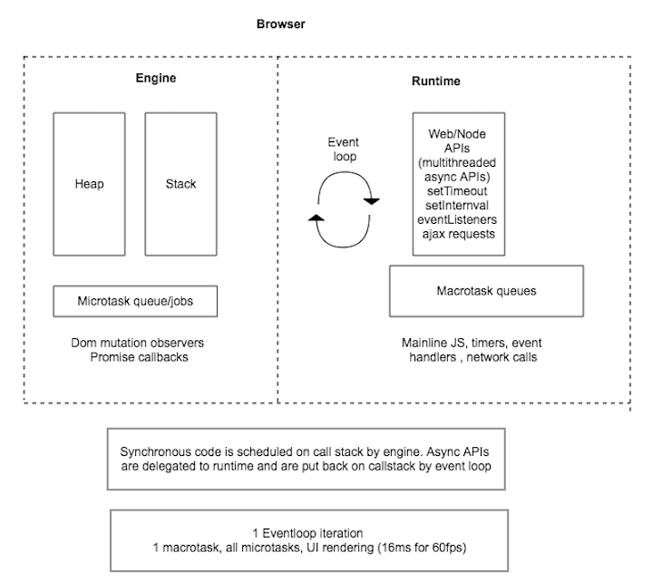
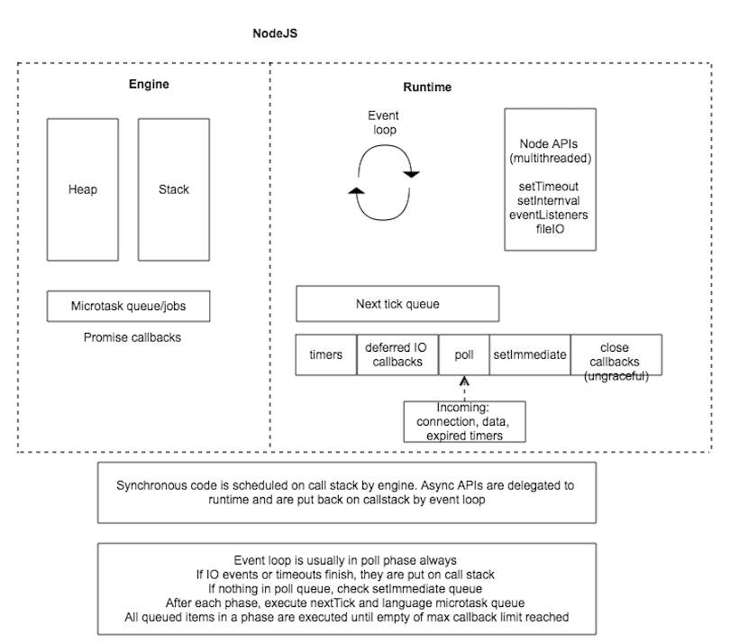

Event loop
1 Javascript engine/runtime architecture
1.1 Browser event loop

1.2 NodeJS event loop

2 Macro and micro task examples
2.1 Macro task examples
- setTimeout
- setInterval
- events
- network calls
- mainline JS
setTimeout(() => console.log('response form setTimeout task'), 0);
let x = 1;
const intervalId = setInterval(() => {
console.log('logging from setInterval');
x++;
if (x > 2) {
clearInterval(intervalId);
}
}, 0);
//response form setTimeout task
//logging from setInterval
//logging from setInterval
2.2 Micro task examples
- promise callbacks
- DOM mutation observers
Promise.resolve().then(() => console.log('returning from promise'));
//returning from promise
2.3 NodeJS task examples
Additional tasks in NodeJS
- process.nextTick (microtask, separate queue)
- setImmediate
- FileIO operations
const fs = require('fs');
fs.readFile(__filename, () => {
setTimeout(() => {
console.log('timeout');
//microtasks (promise, nextTick)
Promise.resolve().then(() => console.log('promTime1'));
Promise.resolve().then(() => console.log('promTime2'));
Promise.resolve().then(() => console.log('promTime3'));
process.nextTick(() => console.log('tick 1'));
process.nextTick(() => console.log('tick 2'));
process.nextTick(() => console.log('tick 3'));
}, 0);
setImmediate(() => {
Promise.resolve().then(() => console.log('prom1'));
Promise.resolve().then(() => console.log('prom2'));
Promise.resolve().then(() => console.log('prom3'));
console.log('immediate');
});
setImmediate(() => {
console.log('immediate2');
});
setImmediate(() => {
console.log('immediate3');
});
setTimeout(() => {
console.log('timeout1');
}, 0);
setImmediate(() => {
console.log('immediate4');
});
});
Output:
immediate
immediate2
immediate3
immediate4
prom1
prom2
prom3
timeout
timeout1
tick 1
tick 2
tick 3
promTime1
promTime2
promTime3
3 Breaking long running tasks using timers
3.1 Browser
3.1.1 Sync table
const tbodySync = document.querySelector('#tbodySync');
for (let i=0; i<2; i++) {
const tr = document.createElement('tr');
for (let t=0; t<2; t++) {
const td = document.createElement('td');
td.appendChild(document.createTextNode(`${i}-${t}`));
tr.appendChild(td);
}
tbodySync.appendChild(tr);
}
3.1.2 Async table
const tbodyAsync = document.querySelector('#tbodyAsync');
const rowCount = 2;
const divideInto = 2;
const chunkSize = rowCount / divideInto;
let iteration = 0;
setTimeout(function generateRows() {
const base = chunkSize * iteration;
for (let i = 0; i < chunkSize; i++) {
const tr = document.createElement('tr');
for (let t = 0; t < 2; t++) {
const td = document.createElement('td');
td.appendChild(document.createTextNode((i + base) + '-' + t));
tr.appendChild(td);
}
tbodyAsync.appendChild(tr);
}
iteration++;
if (iteration < divideInto)
setTimeout(generateRows, 0);
}, 0);
3.2 NodeJS
let foo, bar;
function someAsyncAPICall(callback) { callback() };
someAsyncAPICall(() => console.log('foo', foo));
foo = 1;
//foo undefined
function betterAsyncAPICall(callback) { process.nextTick(callback) };
betterAsyncAPICall(() => console.log('bar', bar));
bar = 1;
//bar 1